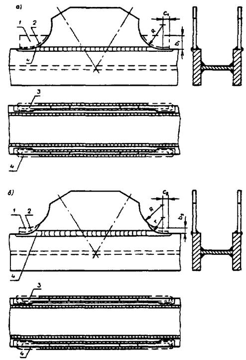

|
МИНИСТЕРСТВО |
МИНИСТЕРСТВО |
ИНСТРУКЦИЯ
ПО МЕХАНИЧЕСКОЙ ОБРАБОТКЕ
СВАРНЫХ СОЕДИНЕНИЙ
В СТАЛЬНЫХ КОНСТРУКЦИЯХ МОСТОВ
ВСН 188-78
МИНТРАНССТРОЙ, МПС
Утверждена
распоряжением Минтрансстроя и МПС
от 4 января 1978 г.
№ А-6/П-287
МОСКВА 1978
СОДЕРЖАНИЕ
«Инструкция по механической обработке сварных соединений в стальных конструкциях мостов» (ВСН 188-78) разработана в развитие глав СНиП по проектированию мостов и труб, а также по производству и приемке металлических конструкций Всесоюзным научно-исследовательским институтом транспортного строительства - ЦНИИС Минтрансстроя (авторы - канд. техн. наук К.П. Большаков, инженеры Б.М. Передереев, А.Н. Потапов, К.А. Шашина).
В основу настоящей инструкции положены результаты проведенных в ЦНИИС экспериментальных исследований выносливости сварных мостовых конструкций из углеродистых и низколегированных сталей. Эти исследования были обобщены в ранее разработанных ЦНИИС «Указаниях по обработке элементов после сварки». (Приложение № 10 к ТУПИМ-св-55).
В последующие годы эффективность механической обработки сварных соединений как средства повышения выносливости (долговечности) и хладостойкости сварных мостовых конструкций была подтверждена при исследовании новых марок высокопрочных низколегированных сталей в ЦНИИС, НИИмостов и Институте электросварки им. Е. О. Патона.
При разработке настоящей инструкции учтен опыт осуществления механической обработки сварных соединений - по упомянутым рекомендациям Приложения № 10 к ТУПИМ-св-55 - на мостовых заводах, а также на ряде заводов промышленности металлоконструкций, тяжелого и среднего машиностроения.
|
Министерство транспортного строительства (Минтрансстрой) Министерство путей сообщения (МПС) |
Ведомственные строительные нормы |
ВСН 188-78 |
|
Минтрансстрой, МПС |
||
|
Инструкция по механической обработке сварных соединений в стальных конструкциях мостов |
Взамен «Указаний по обработке элементов после сварки» - Приложения № 10 к ТУПИМ-св-55 |
1.1. Инструкция по механической обработке сварных соединений в стальных конструкциях мостов обычного и северного исполнения разработана в развитие глав СНиП по проектированию мостов и труб, а также по производству и приемке металлических конструкций. Инструкцией необходимо руководствоваться при разработке чертежей КМ, КМД и технологических карт, а также при выполнении механической обработки сварных соединений на заводах, изготавливающих стальные конструкции мостов, и на строительстве - после осуществления монтажной сварки пролетных строений железнодорожных, совмещенных, автомобильнодорожных, городских и пешеходных мостов из углеродистой и низколегированной стали.
1.2. Механическую обработку сварных соединений в стальных конструкциях мостов следует назначать в проектах в соответствии с требованиями действующих нормативных документов.
Например. Обработать по п. 2.2 ВСН 188-78.
Для случаев, не предусмотренных в настоящей инструкции, проектная организация, с учетом рекомендаций ЦНИИС, указывает в чертежах КМ конструктивное оформление и технологические требования к обработке зон концентрации, а для железнодорожных мостов согласовывает их с МПС.
|
Внесена ЦНИИС Минтрансстроя |
Утверждена распоряжением Минтрансстроя и МПС |
Срок введения в действие - |
1.4. Для механической обработки сварных соединений в стальных конструкциях мостов допускается применение абразивных кругов различной твердости и крупности зерна, специальных абразивных камней, а также фрез различных типов и формы, обеспечивающих возможность выполнения всех требований к обработке, изложенных ниже.
Характеристики оборудования и инструмента, применяемых при механической обработке, приведены в приложении (табл. 1-4).
Допускается применять оборудование и инструмент других типов при условии выполнения всех требований к обработке, предъявляемых настоящей инструкцией.
При этом рекомендуется отдавать предпочтение специальным переносным шлифовальным машинам и фрезерным станкам, обеспечивающим более высокую механизацию процесса обработки.
Обработанная поверхность не должна иметь рисок, расположенных поперек направления усилий, действующих в элементе при его работе. Чистота поверхности - не ниже 5 класса по ГОСТ 2789-73.
На границе зоны обработки не должно быть ступенек.
Заусенцы у деталей и элементов в зоне обработки должны быть устранены зачисткой, а острые кромки - скруглены, с соблюдением при этом требования о направлении рисок.
1.7. При обработке абразивными кругами не допускаются ожоги металла (в виде черных пятен и цветов побежалости на зачищаемых местах), образующиеся при сильном нажатии на абразивный круг и медленном перемещении его по поверхности обрабатываемого изделия.
Чтобы избежать ожогов и шлифовочных трещин, следует обеспечивать непрерывное движение абразивного круга по обрабатываемой поверхности и соответствующим образом регулировать силу нажатия.
1.8. Выявленные в зоне обработки технологические дефекты сварки, а также неполное проплавление - в случаях, когда требование сквозного проплавления является обязательным, - должны быть устранены.
Способы устранения дефектных участков сварных соединений назначают согласно указаниям пункта 1.62 главы СНиП III-18-75.
Подрезы, допускаемые главой СНиП III-18-75 (табл. 41), но попавшие в зону механической обработки, должны быть полностью удалены.
Должны быть также зачищены следы газовой резки, применявшейся для удаления технологических припусков перед механической обработкой и для удаления выводных планок.
Качество механической обработки сварных соединений должно удовлетворять всем требованиям пп. 6.2-6.3.
Углубление в основной металл при зачистке вдоль усилия в элементе не должно превышать 1 мм на металле толщиной до 20 мм и 6% толщины - на более толстом металле.
В случае превышения допускаемой величины ослабления производится подварка с последующей зачисткой с выполнением при этом всех требований, предъявляемых к зонам механической обработки.
1.11. Механическую обработку сварных соединений следует выполнять после осуществления контроля их качества методами, регламентированными табл. 42 главы СНиП III-18-75 для данной категории и типа соединений.
1.12. Механическую обработку сварных соединений в стальных конструкциях мостов осуществляют лица, освоившие правила работы шлифовальными машинами и на переносных станках, изучившие инструкции по эксплуатации применяемого оборудования и инструмента и правила ухода за ним, прошедшие испытания и имеющие удостоверения на право производства механической обработки.
* В разделах 2-5 изложены номинальные требования к механической обработке сварных соединений в типовых случаях, оговариваемых в чертежах КМ, согласно указаниям п. 1.3.
В случае необходимости проектная организация оговаривает в чертежах КМ повышенные требования (увеличенные против номинальных радиусы плавных переходов и т. д.).
2.1. Механическая обработка стыковых соединений должна удовлетворять требованиям пп. 1.6-1.10 настоящей инструкции и дополнительным требованиям, изложенным ниже.
2.2. После механической обработки стыковое соединение должно иметь плавный переход от металла шва к основному металлу в соответствии с требованиями, указанными на рис. 1.
Рис. 1. Схема обработки стыкового соединения листов одинаковой толщины без снятия усиления:
1 - граница шва; 2 - граница зоны механической обработки; 3 - металл, удаляемый при обработке; r - радиус перехода (r ³ 15 мм)
Рис. 2. Схема зачистки острого гребня на усилении стыкового шва после получения плавных переходов:
1 - граница шва; 2 - граница зоны механической обработки; 3 - металл шва, удаляемый при обработке; b - ширина зоны зачистки гребня (b ³ 5 мм); r - радиус перехода (r ³ 15 мм)
Рис. 3. Схема обработки стыкового соединения листов разной толщины:
1 - граница шва; 2 - граница зоны механической обработки; 3 - металл, удаляемый при обработке; r - радиус перехода (r ³ 15 мм)
Рис. 4. Схема обработки стыкового соединения листов разной ширины:
1 - граница шва; 2 - граница зоны механической обработки; 3 - металл, удаляемый при обработке; r - радиус перехода к усилению шва (r ³ 15 мм); R - радиус перехода к более широкому листу (R ³ 150 мм)
Рис. 5. Схема обработки стыкового соединения листов одинаковой толщины со снятием усиления:
1 - граница шва; 2 - граница зоны механической обработки; b - участок, обрабатываемый за пределами стыкового шва (b ³5 мм); 3 - металл, удаляемый при обработке
Рис. 6. Схема обработки усиления стыкового шва в примыкании горизонтального и вертикального листов элемента коробчатого сечения:
1 - усиление стыкового шва; 2 - металл, удаляемый при обработке; l - длина обрабатываемого участка шва (l ³ L + 40 мм, где L - длина стыковой полунакладки); r - радиус перехода (r ³ 60 мм)
На усилении шва после механической обработки не должно оставаться острого гребня; для этого в необходимых случаях вершину усиления следует сглаживать параллельно плоскости свариваемых листов (рис. 2); при этом высота усиления не должна превышать величины, предусмотренной ГОСТами на сварные соединения.
Рис. 7. Схема обработки усиления стыкового шва в зоне пересечения (а) или примыкания к угловому (б) или к другому стыковому шву (в):
1 - граница шва; 2 - граница зоны механической обработки; 3 - металл, удаляемый при обработке; l - длина обрабатываемого участка шва (l ³ 40 мм); r - радиус перехода, (r ³ 60 мм)
При механической обработке стыкового соединения листов разной толщины или разной ширины должны быть выполнены требования, указанные на рис. 3 и 4.
2.3. В случаях, обусловленных особенностями конструкции (наличие стыковых швов в листах многолистового пояса, пересечение стыкового шва конструктивными элементами, привариваемыми втавр или внахлестку, перекрытие стыкового шва фасонками, накладками, уголками и т. п.) или принятой технологией механической обработки (обработка торцевыми фрезами или торцевыми абразивными камнями и т. п.), усиление шва следует снимать заподлицо с основным металлом (рис. 5 и 6). При этом следует особенно тщательно контролировать обработанную поверхность, учитывая, что обработкой могут быть вскрыты имеющиеся в шве внутренние поры и шлаковые включения.
Рис. 8. Схема обработки монтажного сварного стыка двутавровой балки:
1, 2 - участки швов, обрабатываемые по границе перехода к основному металлу; 3, 4 - участки швов, обрабатываемые заподлицо с основным металлом
2.4. Перед наложением шва, пересекающего (рис. 7, а) или примыкающего к другому шву (рис. 7, б, в), во избежание образования подреза в месте пересечения, следует обрабатывать усиление ранее наложенного стыкового шва заподлицо с основным металлом на расстоянии не менее 40 мм от кромки листа или оси пересекаемого шва, обеспечивая при этом постепенный переход к незачищенному участку шва.
Рис. 9. Схема обработки монтажного сварного стыка растянутой ребристой плиты коробчатого пролетного строения:
1, 2 - участки шва, обрабатываемые по границе перехода к основному металлу; 3, 4 - участки швов, обрабатываемые заподлицо с основным металлом
2.5. В монтажном сварном стыке двутавровой балки (рис. 8) участки 1 стыкового шва растянутого пояса и участки 2 стыкового шва стенки в растянутой зоне следует обрабатывать в соответствии с требованиями п. 2.2 (см. рис. 1); участок 3 стыкового шва пояса и участки 4 стыковых швов стенки - в соответствии с требованиями п. 2.4 (см. рис. 7, б).
2.6. В монтажном сварном стыке растянутой ребристой плиты коробчатых пролетных строений (рис. 9) участки 1 стыкового шва листа и участки 2 стыковых швов продольных ребер обрабатываются в соответствии с п. 2.2 (см. рис. 1), а участки 3 стыкового шва листа и участки 4 стыковых швов продольных ребер следует обрабатывать в соответствии с требованиями п. 2.4 (см. рис. 7, б).
2.7. Зачистку кромок листов (после удаления выводных планок газовой резкой) следует осуществлять на всей длине участка, где накладывались швы, прикрепляющие выводные планки. При этом на углах кромок листов следует обеспечивать плавные скругления радиусом 2 мм.
Рис. 10. Схема обработки торцов шва при удалении технологических дефектов:
R - радиус сопряжения (R > 150 мм)
2.8. В случае необходимости удаления поверхностных технологических дефектов с торца шва с помощью механической обработки допускается плавно (с уклоном не более 1¸20, сопрягаемыми радиусом не менее 150 мм) углубляться на свободной кромке в основной металл без подварки на величину 0,02 ширины свариваемого листа, но не более, чем на 8 мм с каждой стороны (рис. 10). После обработки торцов швов углы кромок листов следует плавно скруглять радиусом 2 мм.
3.1. Механическая обработка сварных соединений фасонок должна удовлетворять требованиям п.п. 1.6-1.10 настоящей инструкции и дополнительным требованиям, изложенным ниже.
Рис. 11. Схема обработки концов фасовок, привариваемых к кромке листа встык:
а - для растянутой зоны, б - для сжатой зоны; 1 - технологический припуск; 2 - контур, по которому припуск удаляется газовой резкой; 3 - зона механической обработки; 4 - конец шва на плоскости листа, обработанный заподлицо; b - ширина припуска у края фасонки (b1 ³ 100 мм, b2 ³ 20 мм); с - расстояние от края припуска до начала плавного перехода (с1 ³ 30 мм, с2 ³ 15 мм); r - радиус перехода (r ³ 60 мм)

Рис. 12. Схема обработки концевых участков фасонок-приставок, привариваемых в узлах главных ферм встык:
а - для растянутой зоны; б - для сжатой зоны; 1 - технологический припуск; 2 - контур, по которому припуск удаляется газовой резкой; 3 - зона механической обработки; 4 - конец шва на плоскости листа, обработанный заподлицо; b - ширина припуска у края фасонки (b1 ³ 100 мм, b2 ³ 20 мм); с - расстояние от края припуска до начала плавного перехода (c1 ³ 30 мм, c2 ³ 15 мм); R - радиус выкружки фасонки (R ³ 250 мм); r - радиус перехода (r ³ 60 мм)
3.2. Механическую обработку концов фасонок, привариваемых встык к кромке листа (пояса балки, элемента фермы и т. п.), следует выполнять в соответствии с требованиями, указанными на рис. 11, а для растянутой зоны и рис. 11, б - для сжатой зоны.
Рис. 13. Схема обработки концов фасонок связей, привариваемых к плоскости листа втавр:
а - для растянутой зоны; б - для сжатой зоны; 1 - технологический припуск; 2 - контур, по которому припуск удаляется газовой резкой; 3 - зона механической обработки; b - ширина припуска у края фасонки (b1 ³ 100 mm, b2 ³ 20 мм); с - расстояние от края припуска до начала плавного перехода (c1 ³ 30 мм, с2 ³ 15 мм); r - радиус перехода (r ³ 60 мм)
При совпадении плоскости фасонки и листа концы соответствующего шва, прикрепляющего фасонку, следует зачищать заподлицо с указанной плоскостью (в противном случае эта зачистка не производится).
Рис. 14. Схема обработки концевых участков фасонок, привариваемых в узлах главных ферм втавр:
а - для растянутой зоны, б - для сжатой зоны; 1 - технологический припуск; 2 - контур, по которому припуск удаляется газовой резкой; 3 - зона механической обработки; b - ширина припуска у края фасонки (b1 ³ 100 мм, b2 ³ 20 мм); с - расстояние от края припуска до начала плавного перехода (с1 ³ 30 мм, с2 ³ 15 мм); R - радиус выкружки фасонки (R ³ 250 мм); r - радиус перехода (r ³ 60 мм)
3.3. В узлах главных ферм концевые участки выкружек фасонок-приставок, привариваемых встык, подвергаются механической обработке в соответствии с требованиями, указанными на рис. 12, а для растянутой зоны и рис. 12, б - для сжатой зоны.
3.4. Механическую обработку концов фасонки связей, привариваемой втавр к плоскости листа (стенки или пояса балки, элемента фермы и т. п.), следует выполнять в соответствии с требованиями, указанными на рис. 13, а для растянутой зоны и рис. 13, б - для сжатой зоны.
3.5. В узлах главных ферм механическую обработку концевых участков выкружек фасонок, привариваемых втавр, следует выполнять согласно требованиям, указанным на рис. 14, а для растянутой зоны и рис. 14, б - для сжатой зоны.
3.6. При удалении технологического припуска на концах фасонок газовой резкой следует обеспечивать выполнение требований п. 1.5.
4.1. Механическая обработка концов обрываемых частей сварных элементов и балок должна удовлетворять требованиям пп. 1.6-1.10 настоящей инструкции и дополнительным требованиям, изложенным ниже.
4.2. Механическую обработку конца горизонтального ребра жесткости, обрываемого вблизи монтажного болтового или комбинированного болто-сварного стыка балки, следует выполнять в соответствии с требованиями, указанными на рис. 15, а для растянутой зоны и рис. 15, - для сжатой зоны.
4.3. При обрыве стенки, смещенном относительно торца сварного элемента Н-образного, а также двутаврового сечения (например, в случае применения комбинированного стыка), механическую обработку ее концевых участков следует выполнять в соответствии с требованиями, указанными на рис. 16.
4.4. При прикреплении элементов Н-образного и крестового сечения к одиночным фасонкам механическую обработку концевых участков скосов в полках следует выполнять в соответствии с требованиями, указанными на рис. 17, а, б для растянутых элементов и рис. 17, а, в - для сжатых элементов.
Рис. 15. Схема обработки конца горизонтального ребра жесткости, обрываемого вблизи монтажного болтового или комбинированного болто-сварного стыка балки:
а - для растянутой зоны, б - для сжатой зоны; 1 - технологический припуск; 2 - контур, по которому припуск удаляется газовой резкой; 3 - зона механической обработки; b - ширина припуска у конца ребра (b1 ³ 100 мм, b2 ³ 20 мм); с - расстояние от края припуска до начала плавного перехода (с1 ³ 30 мм, c2 ³ 15 мм); r - радиус перехода (r ³ 60 мм)
Рис. 16. Схема обработки концевого участка стенки при обрыве ее не у торца элемента:
а - Н-образного сечения, б - двутаврового сечения; 1 - технологический припуск; 2 - контур, по которому припуск удаляется газовой резкой; 3 - зона механической обработки; с - расстояние от края припуска до начала плавного перехода (с ³ 30 мм); r - радиус перехода (r ³ 80 мм), R - радиус выкружки стенки Н-образного элемента (R=B-2b, где В - высота стенки), b - ширина припуска у конца стенки (b ³ 20 мм); R1 - радиус выкружки технологического окна (R1 ³ 75 мм)
Рис. 17. Схема обработки концевых участков скосов в полках при прикреплении элементов Н-образного и крестового сечения к одиночным фасонкам:
а и б - для растянутых элементов, а и в - для сжатых элементов; 1 - технологический припуск; 2 - контур, по которому припуск удаляется газовой резкой; 3 - зона механической обработки; b - ширина припуска у конца полки (b1 ³ 100 мм, b2 ³ 20 мм); с - расстояние от края припуска до начала плавного перехода (c1 ³ 30 мм. C2 ³ 15 мм); r - радиус перехода (r1 ³ 150 мм, r2 ³ 60 мм)
Рис. 18. Схема обработки концевых участков скосов в полках, в случае обрыва полок сварного элемента Н-образного или двутаврового сечения не у торца элемента:
а и б - для растянутых элементов, а и в - для сжатых элементов; 1 - технологический припуск; 2 - контур, по которому припуск удаляется газовой резкой; 3 - зона механической обработки; b - ширина припуска у конца полки (b1 ³ 100 мм, b2 ³ 20 мм); с - расстояние от края припуска до начала плавного перехода (c1 ³ 30 мм, с2 ³ 15 мм); r - радиус перехода (r ³ 150 мм, r2 ³ 60 мм)
4.5. В случае обрыва полок сварного элемента Н-образного или двутаврового сечения не у торца элемента механическую обработку концевых участков скосов в полках следует выполнять в соответствии с требованиями, указанными на рис. 18, а для растянутых элементов и рис. 18, б - для сжатых элементов.
Рис. 19. Схема обработки косых угловых швов на конце обрываемого в пролете поясного листа сплошной балки с многолистовым поясом:
1 - граница углового шва; 2 - зона механической обработки; l - длина обрабатываемого участка шва (l ³ 100 мм); r - радиус перехода (r ³ 5 мм); h - величина ослабления сечения согласно п. 1.9
4.6. При удалении технологического припуска на концах обрываемых частей сварных элементов и балок газовой резкой следует обеспечивать выполнение требований п. 1.5.
4.7. Механическую обработку косых угловых швов на конце обрываемого в пролете поясного листа сплошной балки с многолистовым поясом следует выполнять в соответствии с требованиями, указанными на рис. 19.
Допустимая величина ослабления сечения листа (без подварки) вдоль границы косого шва - 1 мм на металле толщиной до 20 мм и 6 % толщины на более толстом металле.
При обработке косых угловых швов абразивным кругом на зачищаемой поверхности допускаются риски, расположенные вдоль шва.
5.1. Механическая обработка швов прикрепления конструктивных деталей должна удовлетворять требованиям пп. 1.6-1.10 настоящей инструкции и дополнительным требованиям, изложенным ниже.
5.2. Механическую обработку косых угловых швов на конце накладного компенсатора следует выполнять в соответствии с требованиями, указанными на рис. 20.
При смещенном относительно торца элемента положении накладного компенсатора край его лобового шва (если шов выполнен ручной сваркой) подвергается механической обработке в соответствии с требованиями, указанными на рис. 21; в этом случае допустимая величина ослабления сечения основного металла принимается в соответствии с требованиями п. 1.9.
Если лобовой шов выполняется полуавтоматической сваркой под флюсом, то механическую обработку можно исключить, при условии обеспечения плавного перехода от шва к основному металлу.
5.3. Выполненные ручной сваркой лобовые швы прикрепления противоугонных уголков обрабатывают в соответствии с указаниями, приведенными на рис. 22.
5.4. Механическую обработку выполненных ручной сваркой угловых швов в прикреплении* диагоналей горизонтальных связей и вертикальных ребер жесткости к ветровому поясу, расположенному в растянутой зоне балки, следует осуществлять в соответствии с указаниями, приведенными на рис. 23.
*Только в конструкциях обычного исполнения.
Рис. 20. Схема обработки косых угловых швов на конце накладного компенсатора ослабления:
1 - граница углового шва; 2 - зона механической обработки; l - длина обрабатываемого участка шва (l ³ 100 мм); r - радиус перехода (r ³ 5 мм); h - величина ослаблении сечения согласно п. 1.9
Рис. 21. Схема обработки края лобового шва накладного компенсатора при смещенном его положении относительно торца элемента:
1 - граница лобового шва; 2 - зона механической обработки; r - радиус перехода (r ³ 5 мм); h - величина ослабления сечения согласно п. 1.9
Рис. 22. Схема обработки выполненных ручной сваркой лобовых швов прикрепления противоугонных уголков:
1 - граница лобового шва; 2 - зона механической обработки; r - радиус перехода (r ³ 5 мм)
Рис. 23. Схема обработки выполненных ручной сваркой угловых швов в прикреплении диагоналей горизонтальных связей и вертикальных ребер жесткости к ветровому поясу, расположенному в растянутой зоне:
1 - зона механической обработки; l - длина обрабатываемого участка косого шва (l ³ 50 мм); r - радиус перехода (r ³ 5 мм)
Рис. 24. Схема обработки выполненных ручной сваркой поперечных угловых швов, прикрепляющих вертикальные ребра жесткости, диафрагмы или фасовки поперечных связей к растянутому элементу или поясу сплошной балки в пролете:
1 - зона механической обработки; 2 - граница поперечного углового шва; r - радиус перехода (r ³ 5 мм); h - величина ослабления сечения согласно п. 1.9
5.5. Выполненные ручной сваркой поперечные угловые швы, прикрепляющие вертикальные ребра жесткости, диафрагмы или фасонки поперечных связей к растянутому элементу или поясу сплошной балки в пролете, обрабатывают в соответствии с указаниями, приведенными на рис. 24.
6.1. При приемке готовых элементов стальных мостовых конструкций ОТК завода и заводская инспекция одновременно с другими параметрами контролируют и качество механической обработки.
Контроль качества механической обработки сварных соединений в стальных конструкциях мостов производится визуальным способом, с применением в необходимых случаях эталонов, простейших измерительных инструментов и шаблонов.
Контролируют наличие обработки во всех зонах, оговоренных в чертежах КМД, и соответствие полученной формы требованиям настоящей инструкции.
6.2. Качество обработки признается удовлетворительным, если осмотром зоны обработки установлено:
а) полное снятие прокатной окалины, а также окисленного поверхностного слоя на протяжении заданной зоны обработки с чистотой не ниже 5 класса по ГОСТ 2789-73, проверяемой по эталонам;
б) плавность (с заданным радиусом) переходов от металла обрабатываемого шва, детали или части сечения;
в) отсутствие на обработанной поверхности надрывов и трещин, а также рисок, расположенных поперек направления усилий, действующих в элементе при его работе;
г) отсутствие в зоне обработки ослаблений сечения, превышающих установленный нормами допуск;
д) отсутствие у деталей и элементов в зоне обработки острых кромок и заусенцев;
е) отсутствие на обработанной абразивным кругом поверхности поджогов металла в виде черных пятен и цветов побежалости, а также шлифовочных трещин;
ж) отсутствие в зоне обработки технологических дефектов сварки (трещин, несплавлений, пор, шлаковых включений, подрезов, а также неполного проплавления толщины детали в случаях, когда требование сквозного проплавления является обязательным);
з) отсутствие следов прихваток, прикрепляющих выводные планки и сборочные приспособления, а также следов газовой резки, применявшейся перед механической обработкой для удаления технологических припусков, выводных планок и т. п.
6.3. Уменьшение размеров зон обработки и радиусов плавных переходов против указанных выше в разделах 2-5 не допускается.
Увеличение размеров зон обработки и радиусов не является браковочным признаком.
7.1. К выполнению механической обработки сварных соединений в стальных конструкциях мостов допускаются лица, сдавшие экзамен по технике безопасности при фрезеровании и зачистке металла абразивами.
7.2. Все инженерно-технические работники, связанные с механической обработкой сварных соединений, должны пройти инструктаж и иметь удостоверение о сдаче испытаний по правилам техники безопасности.
7.3. Детали и узлы, подвергаемые механической обработке, должны быть надежно закреплены, а рабочее место освобождено для свободного доступа работающего.
Удерживать руками детали во время обработки запрещается.
7.4. Работы по механической обработке сварных соединений на высоте свыше 2 м следует выполнять с рабочих площадок или подмостей шириной не менее 1 м.
7.5. Применяемое оборудование и инструмент должны быть в исправном состоянии, а абразивные круги испытаны в соответствии с существующими требованиями.
Запрещается пользоваться неисправным оборудованием и инструментом.
7.6. Корпуса электромоторов и станины переносных станков, а также применяемый электроинструмент должны быть заземлены.
7.7. Не допускается работа с электроинструментом, имеющим нарушение изоляции проводов и неизолированные места соединений проводов.
7.8. При подключении в сеть переносных машин с трехфазным двигателем для исключения возможности поражения электрическим током, необходимо иметь специальную розетку, а у питающего электрического кабеля - специальную четырехполюсную вилку.
7.9. Работать с электроинструментом нужно обязательно в диэлектрических перчатках, прошедших испытания.
7.10. Запрещается:
производить полную или частичную разборку и ремонт электроинструмента при включенном в сеть питающем электрокабеле;
переносить с одного участка работы на другой невыключенный электроинструмент;
оставлять без присмотра включенный электроинструмент;
производить самостоятельно (без привлечения электромонтера) переключение питающих проводов, кабелей и т. д.
7.11. При выполнении механической обработки спецодежда должна быть исправна, правильно надета, достаточно плотно облегать тело и не иметь незаправленных концов, расстегнутых манжет.
Работать с шлифовальными машинами следует в рукавицах.
При выполнении механической обработки абразивными кругами в закрытых помещениях рекомендуется пользоваться респиратором.
7.12. Все открытые движущиеся части переносных станков или машин должны иметь защитные кожуха.
Работать на переносных станках и машинах, не имеющих защитных кожухов, запрещается.
7.13. Шланг к пневматической машине следует присоединять до подачи в него сжатого воздуха. Отсоединять шланг можно только после прекращения подачи в него воздуха из магистрали и выпуска оставшегося в шланге воздуха пусковым устройством.
7.14. Не следует допускать натяжения шланга, перекручивания и образования петель.
7.15. Запрещается полная и частичная разборка машин без отсоединения его от воздухопровода.
7.16. Переносные станки и машины могут приводиться в действие только обслуживающими их лицами и работать только в их присутствии.
При перерывах в работе по механической обработке сварных соединений с применением абразивных кругов надлежит выключить машину и осторожно ее уложить, не допуская удара о металл абразивным камнем.
7.17. Абразивный круг должен быть правильно (центрально) установлен на шпинделе; при этом во избежание ударов при работе круг должен быть хорошо сбалансирован, т. е. центр тяжести круга должен совпадать с осью вращения шпинделя.
Установку или замену абразивного круга должны выполнять специально обученные работники и проверять холостым ходом при рабочем числе оборотов в течение 5 мин.
7.18. Обработка абразивными кругами, имеющими выбоины, канавки, биение, трещины и т. п. категорически запрещается.
7.19. В целях предохранения глаз от ранения отлетающими частями металла и абразива необходимо применять защитные очки. Работать без защитных очков категорически запрещается.
7.20. Для защиты окружающих рабочих от ранения отлетающими частицами металла и абразива рекомендуется устанавливать легкие переносные щиты, ширмы или экраны.
7.21. Вращающийся абразивный круг необходимо подводить к обрабатываемому изделию без ударов, плавно, с постепенным увеличением давления (до необходимого) на изделие.
7.22. Запрещается во избежание пореза проверять чистоту обработки поверхности, качество зачистки кромок и удаление заусениц голыми руками.
7.23. В случае применения газовой резки для обработки сварных соединений, работы должны выполняться на исправном оборудовании и рабочими, имеющими удостоверения на право производства этих работ.
7.24. Кроме приведенных выше указаний раздела 7, при выполнении механической обработки сварных соединений следует учитывать также требования техники безопасности, изложенные в главе СНиП III-A.11-70.
Таблица 1
|
Марка |
|||||
|
Отечественные |
Болгарские |
||||
|
ПЭ-2102А |
ИЭ-2103А |
КМЗ-«В»-1 |
Ш-178 |
Ш-230 |
|
|
Номинальная мощность, кВт |
1,6 |
1,6 |
2,8 |
1,4 |
1,4 |
|
Частота вращения шпинделя, об/мин |
6500 |
8500 |
2840 |
8500 |
6600 |
|
Напряжение, В |
36 |
36 |
380 |
220 |
220 |
|
Частота тока, Гц |
200 |
200 |
50 |
50 |
50 |
|
Габаритные размеры, мм: |
|||||
|
длина |
465 |
465 |
1200 |
360 |
360 |
|
ширина |
288 |
262 |
500 |
100 |
100 |
|
высота |
184 |
184 |
500 |
100 |
100 |
|
Масса, кг |
8,2 |
8,0 |
150 |
6,5 |
6,7 |
|
Примечание: |
Серийные |
Централизованно не выпускаются: чертежи есть в Воронежской лаборатории ЦНИИС |
Серийные |
||
Таблица 2
|
Параметры |
Тип, марка |
||||||||||||||
|
Прямая |
Торцовая |
Угловая |
|||||||||||||
|
П-1 |
П-2 |
П-21 |
ЭП-1087 |
ШМ-25-50 |
ИМ-2001 |
ИП-2002 |
ип-2009А |
ИП-2201 |
ИП-2203 |
ИП-2204 |
ип-2205 |
ИП-2102 |
ип-2103 |
см-21-140* |
|
|
Мощность, л. с. |
1,8 |
1,8 |
2,0 |
0,2 |
0,25 |
2,0 |
1,2 |
0,6 |
1,4 |
1,8 |
2,5 |
2,5 |
2,0 |
2,5 |
0,33 |
|
Частота вращения шпинделя, об/мин: |
|||||||||||||||
|
на холостом ходу |
8500 |
8500 |
6500 |
16000 |
16000 |
5500 |
8000 |
12000 |
5000 |
4500 |
8500 |
6500 |
8500 |
6500 |
12000 |
|
под нагрузкой |
- |
- |
- |
13000 |
8000 |
4500 |
5500 |
- |
- |
- |
- |
- |
- |
- |
- |
|
Расход воздуха, м3/час |
2 |
2 |
2,5 |
0,5 |
0,4 |
1,4 |
1,2 |
0,9 |
1,8 |
1,6 |
2,2 |
2,5 |
2,2 |
2,5 |
0,9 |
|
Габаритные размеры, мм: |
|||||||||||||||
|
длина |
525 |
475 |
555 |
310 |
250 |
565 |
450 |
440 |
364 |
320 |
360 |
370 |
362 |
365 |
180 |
|
ширина |
196 |
198 |
248 |
49 |
42 |
164 |
120 |
80 |
243 |
150 |
300 |
300 |
260 |
300 |
175 |
|
высота |
150 |
44 |
175 |
49 |
76 |
130 |
100 |
65 |
212 |
220 |
200 |
220 |
175 |
200 |
53 |
|
Масса, кг |
6,0 |
5,0 |
7,5 |
1,5 |
0,9 |
6,0 |
3,5 |
1,9 |
4,8 |
4,3 |
4,4 |
5,6 |
4,6 |
7,0 |
0,85 |
|
Диаметр шланга в свету, мм |
18 |
18 |
18 |
13 |
9 |
16 |
13 |
13 |
16 |
16 |
16 |
8 |
18 |
18 |
13 |
|
Примечание: |
Несерийные |
Серийные |
|||||||||||||
* Сверлильная машина. При обработке сварного соединения применяются борфрезы.
Таблица 3
|
Марка машины |
Максимальный диаметр инструмента, мм |
Максимальная окружная скорость, м/сек |
Наименование инструмента и допускаемая окружная скорость vokp, м/сек |
ГОСТ, ТУ |
Рекомендуемые области применения |
Примечание |
|
ИЭ-2102А ИП-2103 П-21 |
225 |
76,4 |
Шлифовальные высокооборотные круги на тканевой основе. vokp ³ 80 |
ТУ 22-2035-70, Министерство строительного, дорожного и коммунального машиностроения |
Вышлифовка корня шва, зачистка поверхности и кромок проката, срезка сборочных приспособлений и фиксаторов, снятие усилений и обработка плавных переходов |
Абразивный материал шлифовальных кругов для обработки сварных соединений и зачистки поверхности проката углеродистых и низколегированных сталей Э, ЭБ и М; номер зернистости - 80-125; твердость - СМ, С, СТ: связка: Б - для vokp ³ 50 м/сек; К - для vokp < 50 м/сек; номер структуры - 4¸8 - выбирается в зависимости от твердости обрабатываемого металла. |
|
Ш-178 |
178 |
78,0 |
||||
|
Ш-230 |
230 |
79,0 |
||||
|
П-1 П-2 ИП-2204 ИП-2102 ИЭ-2103А |
175 |
77,9 |
||||
|
ИП-2205 |
220 |
75,0 |
||||
|
ИП-2201 ИП-2203 |
125 |
32,5 29,4 |
Шлифовальные круги ЧД, ЧК, ПП. vokp ³ 35 |
ГОСТ 2424-07 |
Зачистка поверхности и кромок проката, обработка после газовой резки |
|
|
ИП-2002 ИП-2001 |
100 150 |
41,0 43,0 |
Шлифовальные круги ПП, ПВ. vokp ³ 45 |
ГОСТ 2424-67 |
Обработка плавных переходов носиков фасонок r ³ 50 мм |
|
|
ИП-2009А |
60 |
38,0 |
Шлифовальные круги ПП. vokp ³ 40 |
ГОСТ 2424-67 |
Обработка плавных переходов r ³ 30 мм, исправление неглубоких подрезов |
|
|
ЭП-1087 |
30 |
26,6 |
Шлифовальные круги ПП. vokp ³ 30 |
ГОСТ 2424-67 |
Обработка плавных переходов r ³ 15 мм, исправление неглубоких подрезов |
|
|
ШМ-25-50 СМ-21-140 |
30 30 |
26,6 20,0 |
Борфрезы твердосплавные, головки шлифовальные ГСВ, ГКЗ, ГШ, ГШЦ |
ТУ 2-035-99-69 ГОСТ 2424-67 |
Обработка плавных переходов r ³ 15 мм, исправление подрезов, зачистка в труднодоступных местах |
|
|
КМЗ-«В»-1 |
300 |
44,6 |
Шлифовальные круги ПП. vokp ³ 50 |
ГОСТ 2424-67 |
Зачистка поверхности проката и снятие усиления сварного шва |
Таблица 4
|
Марка или завод-изготовитель фрезерного трактора |
||||
|
ФТ-2 |
Уралхиммаш |
Востокэнергомонтаж |
ПКБ УСК |
|
|
Размеры обрабатываемого шва, мм: |
||||
|
ширина до |
45 |
30 |
20 |
60 |
|
усиление до |
8 |
5 |
5 |
5 |
|
Длина обрабатываемого шва без переключения кабеля, м |
До 10 |
8,0-12,0 |
До 10 |
10,0-12,0 |
|
Диаметр фрез, мм: |
||||
|
внутренний |
200 |
- |
- |
100 |
|
наружный |
280 |
- |
- |
180 |
|
Скорость резания, м/мин |
338 |
138 |
140 |
215 |
|
Скорость движения трактора, м/мин: |
||||
|
рабочая |
0,680 |
0,285 |
До 0,300 |
0,212-0,740 |
|
маршевая |
10,7 |
- |
- |
21,2 |
|
Габаритные размеры, мм |
1680´765´1080 |
1270´1190´732 |
1500´630´800 |
1607´765´1492 |
|
Масса, кг |
2480 |
1245 |
1000 |
1680 |
Примечание. Диаметр фрез следует выбирать исходя из ширины усиления сварного шва.